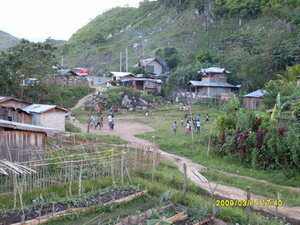

galew 
/galɔw/
v_rt.
“play_around”
v.
for a person or animal (eggalew, miggalew/inggalew, galew, eg><ø-) to play or joke with someone (eggalawen, inggalew/miggalew/piggalew, galawa, patient, eg><en-) somewhere (eggalawan, inggalawan/miggalawan/piggalawan, galawi, location, eg><an-) for some occassion, program or reason (iggalew, iggalawi/inggalawi, galawi, reason, ig><ø-)
Kabayat-bayat key su amana ne eggalew si Binitu kanami.
We are laughing because Benito is joking with us.
Eggalawen a te asu ney tagsè maselem.
Our dog plays with me every morning.
Iyan iggalew te asu ney su naalimengawan.
The reason that our dog is playing with us is because it missed us.
Eng. playful
Tag. palalaru; paladula
OCM: Drivers and Emotions (152), Non-electronic Transmission of Messages (202)
Online dict status: -
Usage level: M
vi.
for someone (egkaalew, egka:lew, naalew, na:lew, mahalew, patient, egkA><ø-) to be willing to joke with another person for a reason (igkaalew, ingka:lew, ingkaalew, ingka:lew, ikahalew, reason, igkA><ø-) (e.g., they are in a good mood)
Iyan ku igkahalew kandin su meupiya ka puhawang din.
The reason that I am able to joke with him is that he is in a good mood.
Eng. joke, willing to
Online dict status: -
Usage level: R
v.
for a person or animal (egpanggehalew, migpanggehalew/impanggehalew, panggehalew, agent, eg><ø-paN-rdpCV-) to play a game (e.g., cards, basketball) (egpanggehalawen, migpanggehalew/impanggehalew/pigpanggehalew, theme, eg><en-paN-rdpCVC-) with a group somewhere (egpanggehalawan, impanggehalawan/migpanggehalawan/pigpanggehalawan, panggehalawi, location, eg><an-pA-rdpCV-) for an occassion or reason (igpanggehalew/iggehalew, reason, ig-paN-)
Iyan dan igpanggehalew te patintiru te marusilem su migtimman ka bulan.
The reason that they are playing pantintiru at night is that it is full moon.
Eng. play
Online dict status: -
Usage level: R
1.
adj.
(mahalew, mA1-) playful (of a person or animal)
Mahalew si Amè su layun e rè egpakangisi.
My Father is joker, that's why I'm always laughing.
Mahalew ka asu ka asu ku su layun e rè eggalawa.
Our dog is playful, because it always plays with me.
Eng. playful; joker; teasing; funny; frolicsome; michievious; cheeky
Online dict status: -
Usage level: M
2.
adj.
(mahalew-galew, mA1-rdpRT-) very playful (of a person or animal)
Syn. lipay
Eng. cheerful; mirthful; happy
Ceb. madasig
OCM: Personality Traits (157)
DDP: Happy (3.4.1.2)
Online dict status: -
Usage level: M
3.
adj.
(mahalew-galew, mA1-rdpRT-) healthy (e.g., a baby)
Eng. healthy
Online dict status: -
Usage level: M
Updated by: RJH,QDL,NJK,QDL,RJH,NJK,QDL,QDL,NJK,RAA,NJK
Last updated: 09/Aug/2010
"inggalew" in healthbook "Mania teg pakapatey kag iindes?"
"peggalew" in healthbook "Mania teg pakapatey kag iindes?"
"inggalew" in healthbook "Mania teg pakapatey kag iindes?"
"peggalew" in healthbook "Eg-ay-ayaran ta ka me ngipen ta"
This page last updated: 19/May/2012
Copyright © 2009-2010, Matigsalug Language Christian Association, Inc